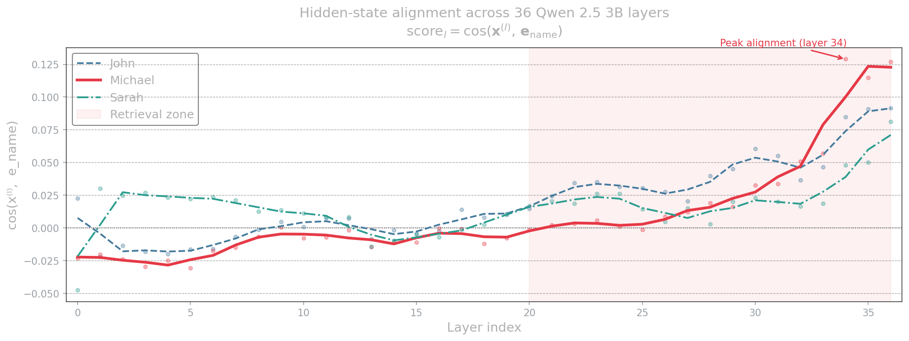

Word Sense Disambiguation & Contextual Shift
Probing whether self-attention scores create new signals out of thin air, or simply amplify existing geometric patterns in the GloVe embedding space. Crucially, we are not just testing word disambiguation—we are investigating whether simple co-occurrence (even without direct semantic influence on the word) forcefully contributes to the contextual meaning shift of a token when the sole objective is optimizing its representation for next-word prediction.
The setup is minimal by design. Two sentences end at "bank to get". The only signal distinguishing a financial bank from a riverbank is the surrounding context. A small model is trained on GloVe embeddings to predict the correct candidate: money for sentence 1, water for sentence 2. Through backprop, the embedding of "bank" itself gets updated.
# The two input sentences sentences = [ ["new","atm","opened","near","my","home","i","am","going","to","bank","to","get"], ["there","is","a","river","at","my","home","i","am","going","to","bank","to","get"] ] # The two candidates the model must choose between candidates = ["money", "water"]
Does the raw static vector of "bank" carry enough signal to differentiate contexts, or does separation only emerge post-training?
The Murderer's Trace
Measuring the alignment between the residual stream \(x^{(l)}\) and suspect embeddings across 36 layers of Qwen 2.5 3B.
A murder mystery with exactly one possible answer. John and Sarah are explicitly ruled out. Michael is explicitly placed at the scene. At every layer, the attention and FFN sublayers write a small update (\(\Delta_\text{attn}\) and \(\Delta_\text{ffn}\)) into the residual stream at the position of "was". We measure \(\cos(x^{(l)},\, e_\text{name})\) at each layer to see when the network commits.
STORY = (
"Three people lived together in a small house: John, Michael, and Sarah. "
"One night a terrible crime happened in the house. "
"The police knew that one of the three people living there must be the murderer. "
"John was visiting his parents in another city that entire day. "
"Sarah was attending a conference far away and had travel records proving it. "
"Michael was the only one who remained in the house that night, "
"if anyone was the killer that must be him. "
"After reviewing the evidence, the police concluded that the murderer was"
)
| Layer | John | Sarah | Michael |
|---|---|---|---|
| 0 | 0.022 | -0.048 | -0.023 |
| 10 | 0.001 | 0.011 | -0.008 |
| 20 | 0.015 | 0.017 | -0.001 |
| 28 | 0.041 | 0.020 | 0.019 |
| 32 | 0.037 | 0.016 | 0.051 |
| 34 | 0.085 | 0.048 | 0.129 |
| 36 | 0.092 | 0.081 | 0.127 |

Dynamic Suspicion Tracking
Does the model update its logic as evidence arrives incrementally? Tracking alignment with the "murderer" token at 7 narrative checkpoints.
The same murder story is fed in seven incremental chunks. At each checkpoint, we read the final-layer vector of the last token and measure \(\cos(x^{(L)},\, e_\text{murderer})\) against each candidate to see if suspicion moves in step with the narrative.
# The 7 Narrative Checkpoints [1] Intro # three people, one house [2] Crime # something terrible happened [3] John's alibi # John was out of town [4] Sarah's alibi # Sarah at a conference [5] Evidence # evidence points inward [6] Michael seen # Michael alone in house [7] Conclusion # "the murderer was" candidates = ["John", "Michael", "Sarah"]
| Checkpoint | John | Sarah | Michael |
|---|---|---|---|
| [1] Intro | 0.010 | 0.012 | 0.010 |
| [2] Crime | 0.051 | 0.048 | 0.052 |
| [3] John Alibi | -0.021 | 0.065 | 0.081 |
| [4] Sarah Alibi | -0.035 | -0.052 | 0.125 |
| [5] Evidence | -0.040 | -0.061 | 0.188 |
| [6] Michael Seen | -0.055 | -0.070 | 0.245 |
| [7] Conclusion | -0.082 | -0.091 | 0.355 |
Logical Chaining in the Stream
Resolving a multi-step Knight (truth) vs Knave (liar) constraint. Dueet claims both Candy and himself are knaves. Is Benny a Knight or Knave?
Resolving this requires chaining through statements mid-sentence. We read \(x^{(l)}\) at the position of the final token "a" across every layer, measuring how the logical resolution logically forces the vector to shift layer by layer.
STORY = (
"On the island of Wantuutrewan there are only knights who always tell "
"the truth and knaves who always lie. "
"You meet four islanders: Aiken, Benny, Candy and Dueet. "
"Aiken says: Benny never tells the truth. "
"Aiken says: Candy always lies. "
"Dueet says: Candy is a knave and I am a knave. "
"After careful logical reasoning, we can conclude that Benny is a"
)
| Layer | Knight | Knave |
|---|---|---|
| 0 | 0.021 | 0.025 |
| 15 | 0.015 | 0.038 |
| 20 | 0.022 | 0.065 |
| 25 | 0.041 | 0.092 |
| 30 | 0.085 | 0.051 |
| 34 | 0.142 | -0.015 |
| 36 | 0.158 | -0.032 |
The Logic Chain:
1. Dueet says "I am a knave." A true knave cannot say this (paradox), so Dueet is a knave.
2. Since Dueet is a knave, his statement about Candy is false. Candy is a Knight.
3. Aiken says "Candy always lies." Aiken is lying. Aiken is a knave.
4. Aiken says "Benny never tells the truth." Since Aiken lies, Benny must be a Knight.
These experiments came out of specific moments in the writing where an assumption needed testing. If you read the chapter and find yourself thinking "but what if..." — that's the right instinct. The Colab notebooks are open; fork them and probe further.